Take the two measurements that decide how much fabric you need: the total width in lesson 1.1 and the total length in lesson 1.2. Section 2 uses them to buy the fabric and section 3 uses them again to measure and mark it. Follow each step and write the numbers down.
The total pattern width (TPW) is the waist size (WS) plus all of the seam allowances (SA) and the elastic stretch comfort, added across all 4 pieces. The seam allowance (SA) is the extra material at a seam that is sewn or folded out of sight. Lesson 3.2 divides the TPW by 4 to find the width of one pattern piece.
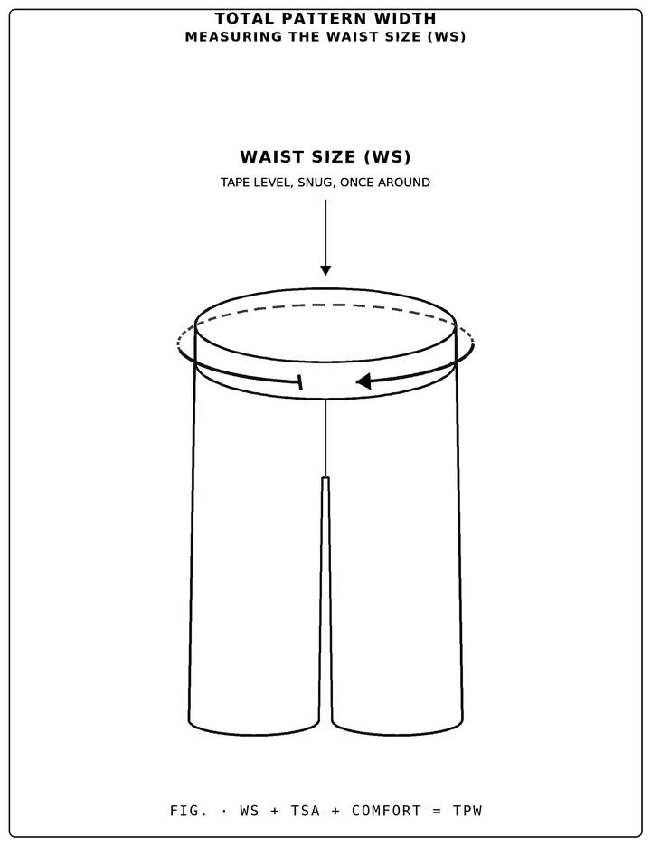
Wrap a measuring tape around your waist where the pants will sit. Keep the tape level all the way around, snug but not tight. Write the number down with a W at the end.
Every side of every piece has a seam allowance. Add them all up across the width.
The comfort is the extra room that lets the waistband stretch over the hips. It is shared by the 4 pieces.
Add items 1, 2 and 3 to find the total pattern width.
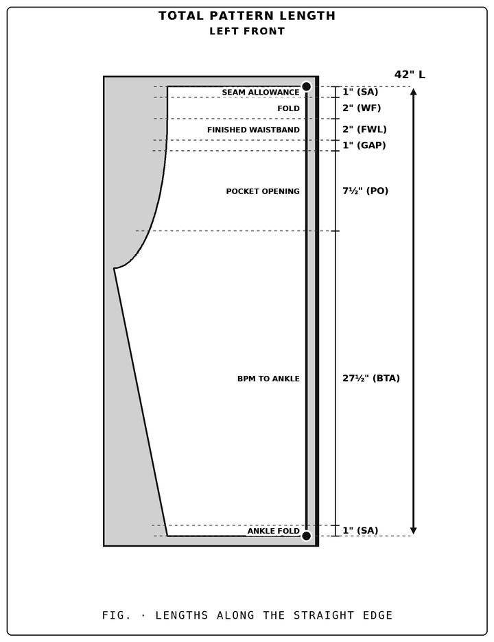
The total pattern length (TPL) is the finished pants length plus the seam allowances, from the top raw edge of the fabric to the bottom of the fabric at the ankle. Each item below measures one value and the last one adds them into the total. You need the TPL to calculate the yards to buy (section 2).
Measure the true length of your body from the top of the waistband to the bottom of the ankle, lying flat with the tape straight. This is the length the finished pants will be. Write the number down with an L at the end.
The waistband needs extra material above the finished waistband. The finished 2" you see is already inside the pants length.
The bottom of each leg folds under, so it needs its own seam allowance.
Add items 1, 2 and 3 to find the total pattern length.
Fabric is sold by the yard (36") from a cord (one roll of fabric) that is at most 22" wide. Use the fabric width each side (lesson 3.2, item 2) and the total pattern length (TPL, lesson 1.2) to work out what to ask for.
The widest retail cord is 22" W, so the fabric width each side of the fold must fit inside it. If it does not, you need a specialty supplier with wider rolls.
Square inches measure how much fabric the pattern needs. Compare them with the square inches in one yard of 22" wide cord to estimate how many yards to buy.
Round the estimate up to whole yards for each of the two sections, the front and the rear, and buy them as one continuous piece.
Each lesson prepares the fabric or marks a pattern value on it with a marker or white chalk, point to point: it tells you which edge to start on, whether to measure across or down, and where to make the mark. The marks are the points you connect in the drawing section. A body measurement already taken in section 1 is not measured again.
Fold the fabric you bought, cut it into the front and rear sections, then label them so you always know which piece you are marking.
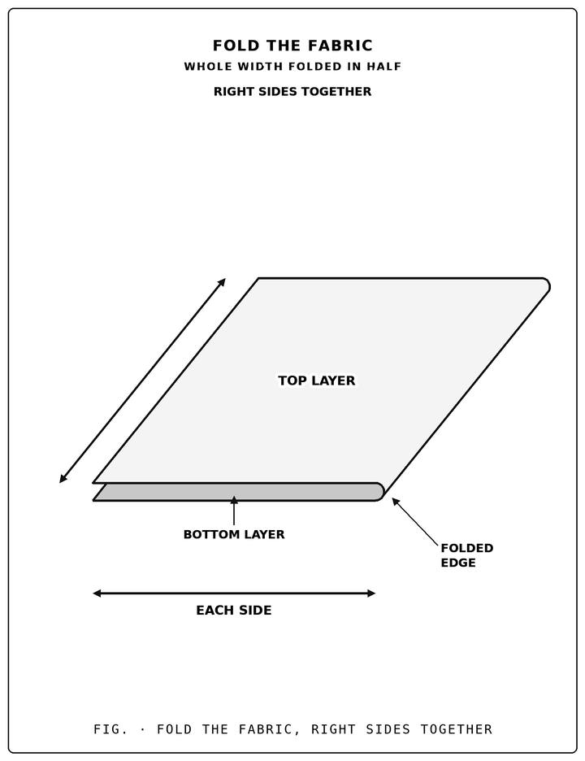
Fold the fabric you bought in half across its whole width, with the right sides together. The wrong sides then face out, so every mark you make is on the wrong side and is never visible when the pants are worn. You will mark each part of the pattern onto the folded fabric with a marker or white chalk.
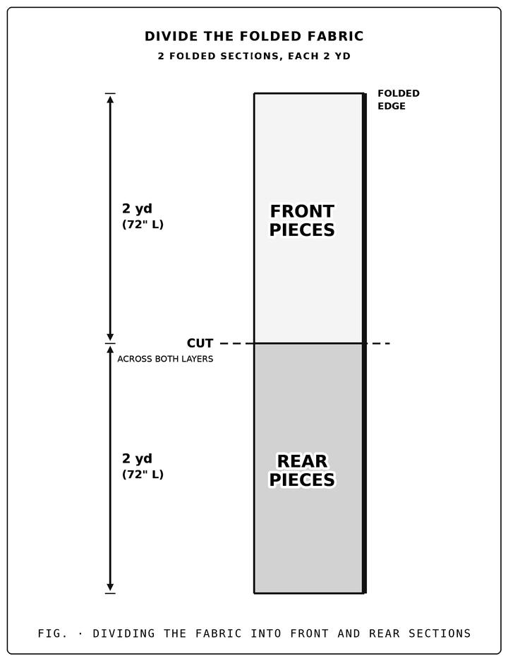
The folded fabric is one continuous piece. Cut it into two folded sections: one for the front pieces and one for the rear pieces.
Each of the 4 pieces gets its own two-letter label: L or R for left or right, and F or R for front or rear. Write the label small, on the wrong side, in the top corner where the straight (folded) edge meets the top of the waistband, at the 90-degree angle. It ends up inside the finished pants and is never seen. Do this now, before any measuring, so you always know which piece you are marking. The two sections from the previous lesson are the front and the rear.
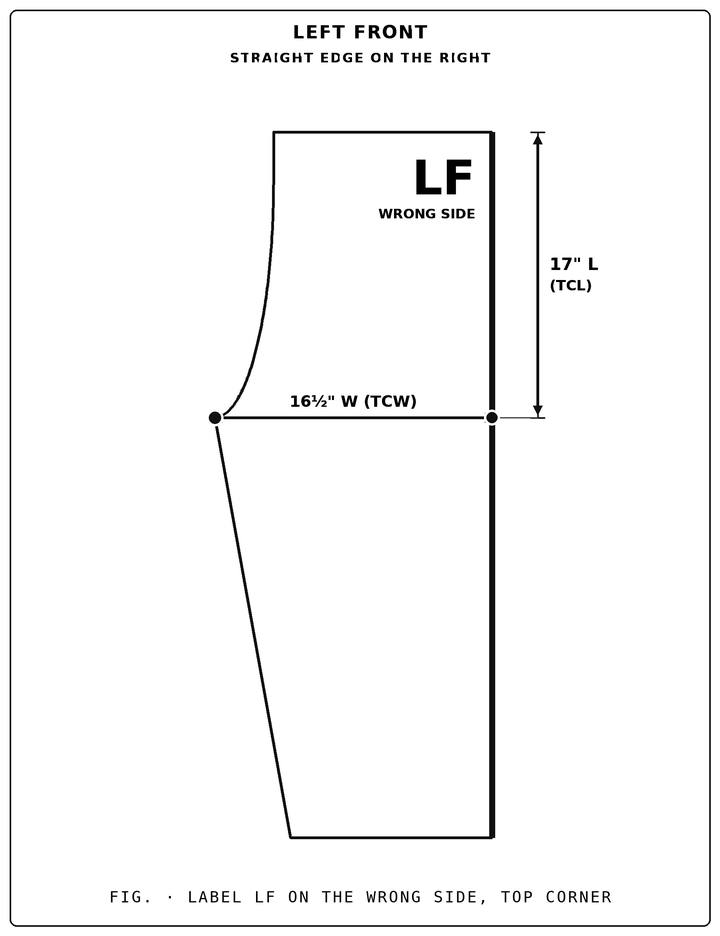
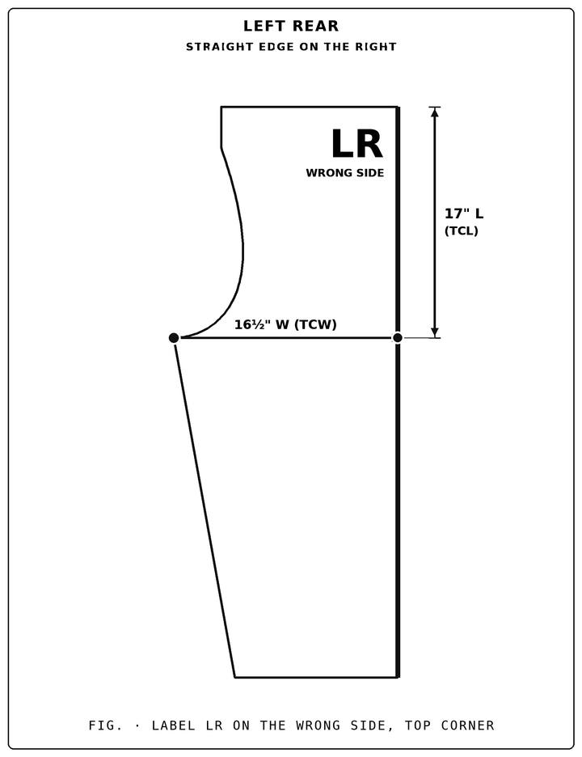
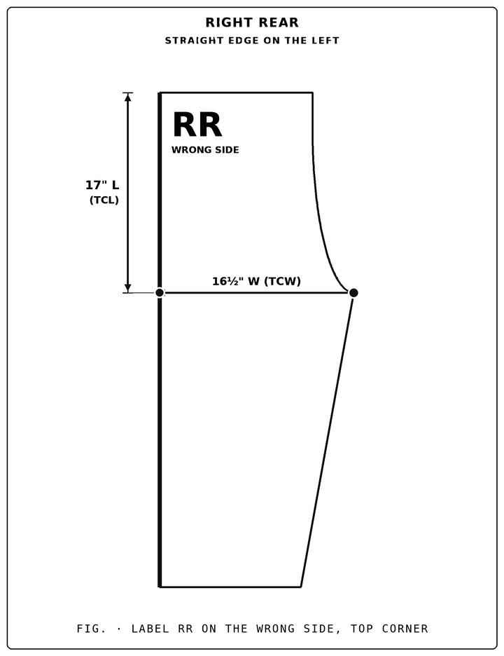
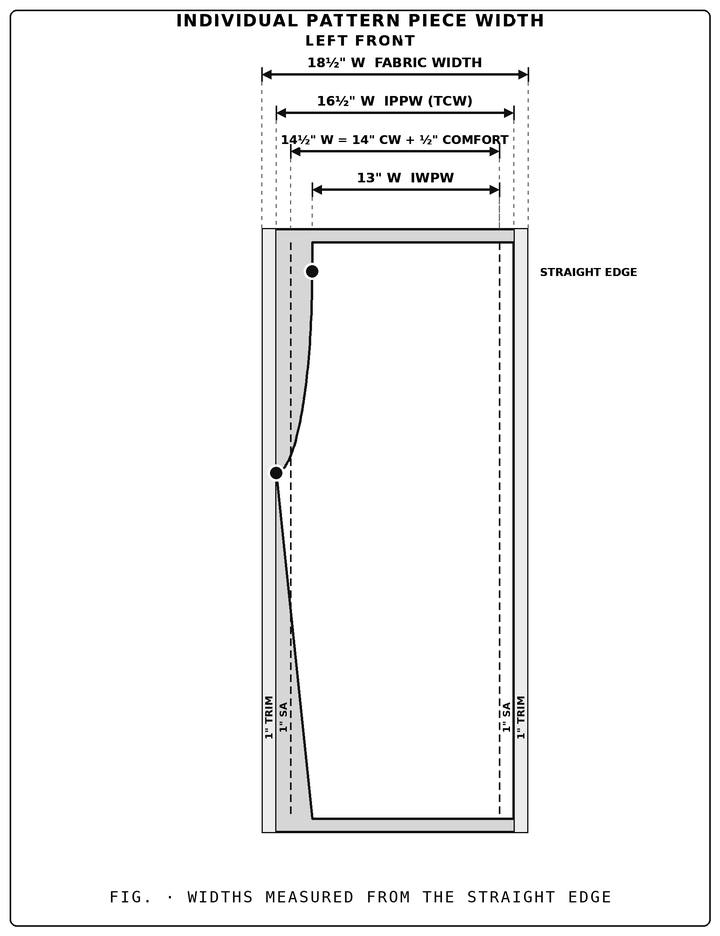
The individual pattern piece measurements (IPPM) are the width measurements of one pattern piece. A piece has its own width at the waist, the crotch and the ankle, and each is worked out in its own lesson below. The maximum cord width of most store bought fabric is 22" W, so the fabric width each side must be 22" or less to use retail fabric.
One pattern piece is a quarter of the pants, so the waist size, the comfort and the seam allowances are worked out for one piece.
The easy method is to use a store bought pattern and trace around the shape provided. For more accurate measurements, measure your body. This item shows you how to measure the crotch, apply a more comfortable elastic stretch and add the trim for the frayed edges.
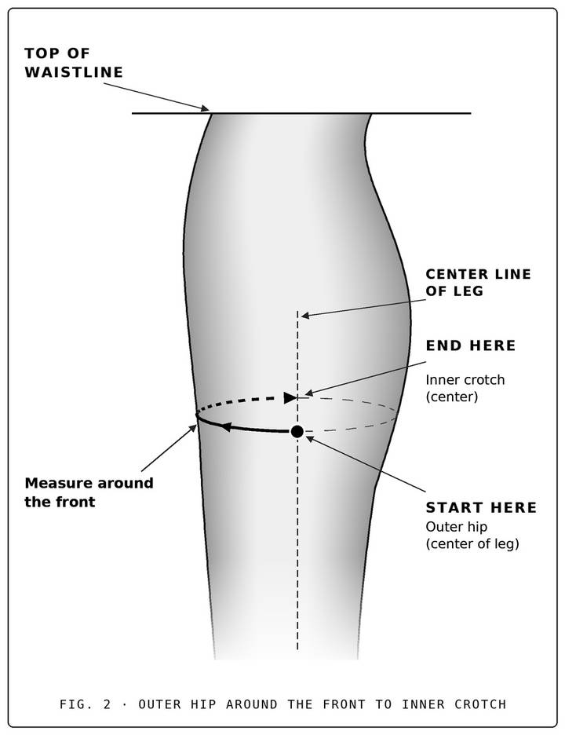
The ankle is the narrowest part of a piece. Only 2 pieces meet at each ankle, so the comfort is shared by 2 pieces, not 4.
Mark the width points along the top of each folded section, always measuring from the folded edge. These points are where the crotch rise and the inseam connect later in Drawing the Pattern.
The first width mark is the waistband width of one piece.
The crotch is the widest part of each piece, so this mark reaches farther across than the IWPW mark.
The ankle width is the last width mark. It is measured from the folded edge to the inseam at the ankle.
Mark every length along the folded edge, from the raw top edge down: the waistband, the pocket opening and the pants leg. Then measure the crotch rise, and mark the crotch marks.
The waistband material is the finished waistband you see plus the waistband seam allowance.
The pocket opening is the gap where the hand goes in. It is bounded by two marks: the Top Pocket Mark (TPM) and the Bottom Pocket Mark (BPM).
This is the pattern material for the pants leg and the ankle. It is the remainder of the TPL after the marks already made.
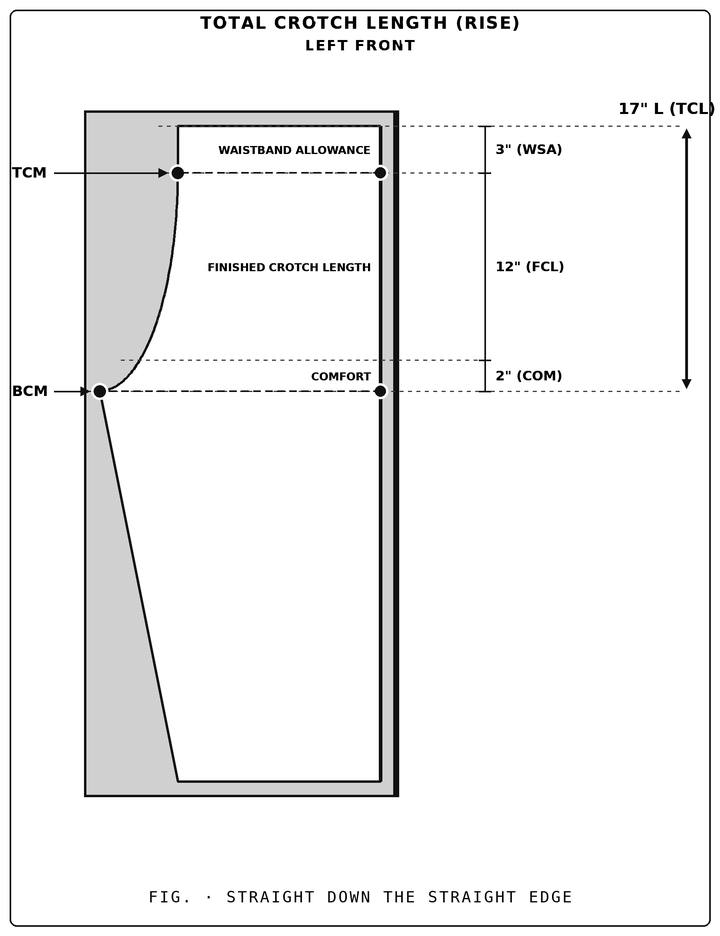
The TCL is a straight vertical distance, not the length of the curve. It starts at the raw top edge and runs straight down the folded edge to the level of the bottom crotch mark (BCM). It is the same for the front and the rear pieces.
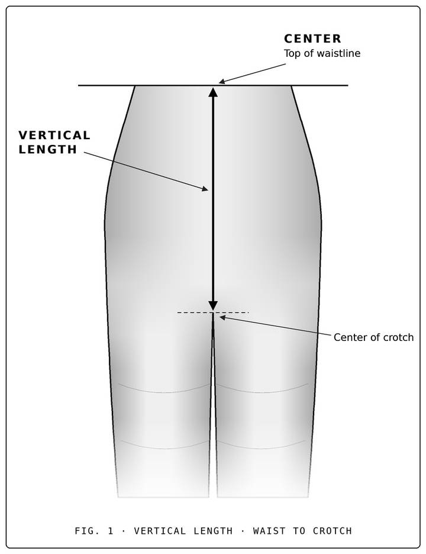
The Bottom Crotch Mark (BCM) is where the crotch rise ends. The rise length down the folded edge is the same for the front and the rear sections, so the BCM sits at the same level on both. It is the point where the rise length and the crotch width meet.
The Top Crotch Mark (TCM) is where the crotch rise begins. It sits straight down from the IWPW mark, where the waistband folds down.
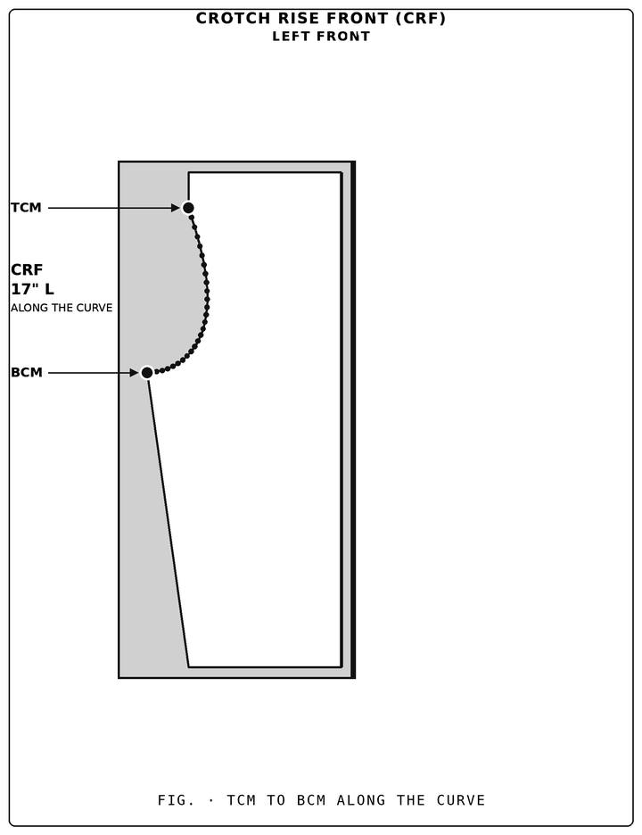
The Crotch Rise (CR) is the curved line that connects the Top Crotch Mark (TCM) and the Bottom Crotch Mark (BCM). The front crotch rise (CRF) is the narrower curve. It is measured along the line, not straight down like the TCL.
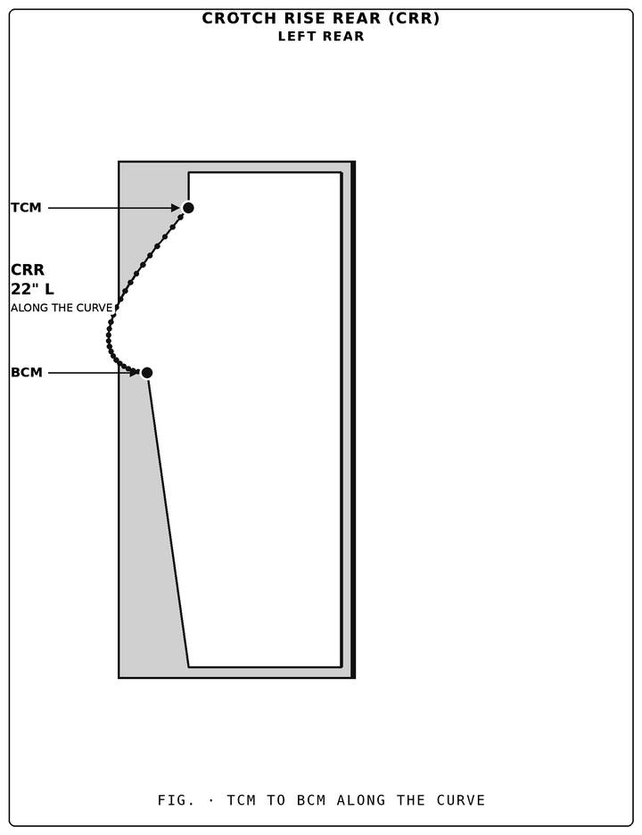
The rear crotch rise (CRR) is the wider, longer curve. The TCM and the BCM are on the same marks as the front, so the BCM sits at the same level. Only the curve between them is wider. The crotch points of the front and rear pieces meet at the same place.
Draw the pattern lines on the fabric with white chalk by connecting the marks from section 3: first the crotch rise between the TCM and the BCM, then the inseam from the BCM to the ankle mark.
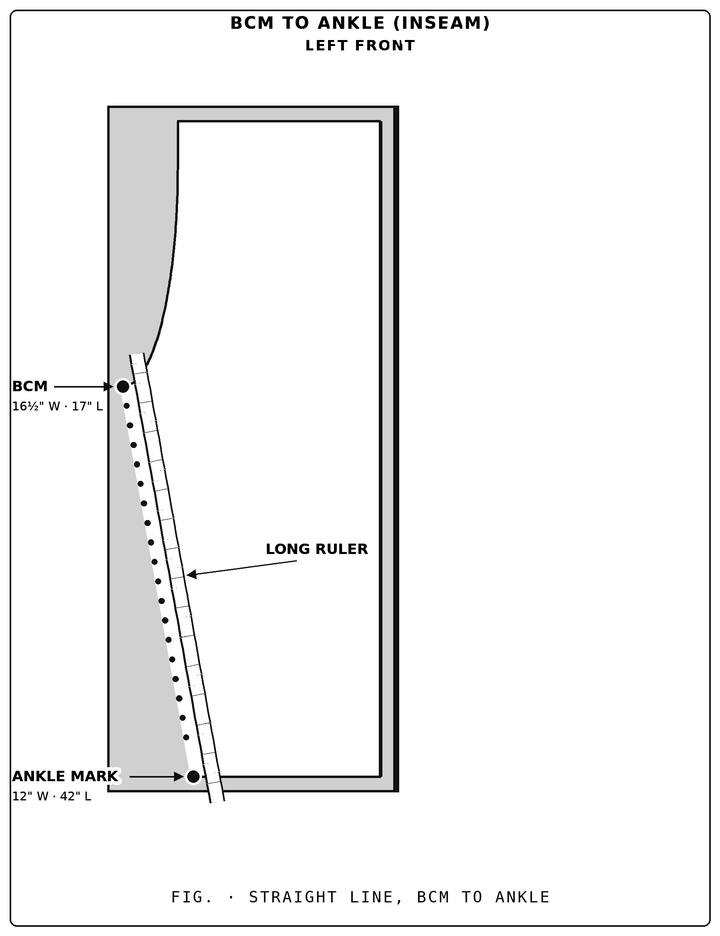
The Inseam is the straight line from the BCM to the ankle mark. Lay a long ruler on the two marks, then draw the line beside it. Do both the front and the rear pieces.
Cut the pattern out along the lines drawn in section 4. Cut the crotch rise and the inseam first, then the folded edge, then trim the sides and the bottom. Cut only after all marking and drawing is finished.
Trim the frayed factory edges and cut the bottom of each piece along the line you marked.
Sew the pants in order: the top waist seam, the eyelets and the waistband, the ankle hems, the rear and front center seams, the zipper, the pockets, and last the side seams that join the front and the rear.
Each pocket is made from two pocket pieces. First sew the two pocket pieces together to make the pocket, then sew the pocket onto the pants pieces. The pocket goes in between the front and the rear pieces, so your hand goes in through the pocket opening and rests inside the pocket.
Two pocket pieces sewn together make one pocket. Make one pocket for each side.
Each pocket starts at the Top Pocket Mark (TPM) and is 12" long. The pocket opening between the TPM and the Bottom Pocket Mark (BPM) stays open, and the pocket continues 12 − 7½ = 4½" below the BPM.